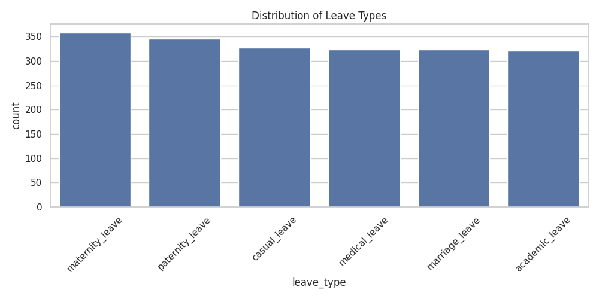
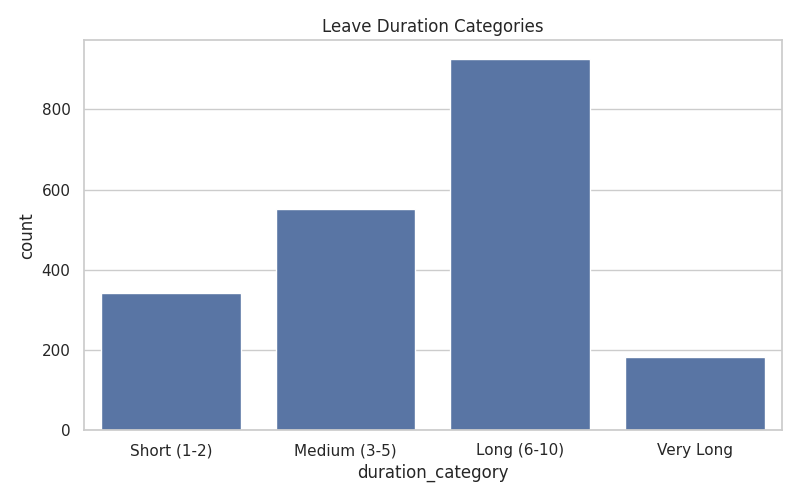
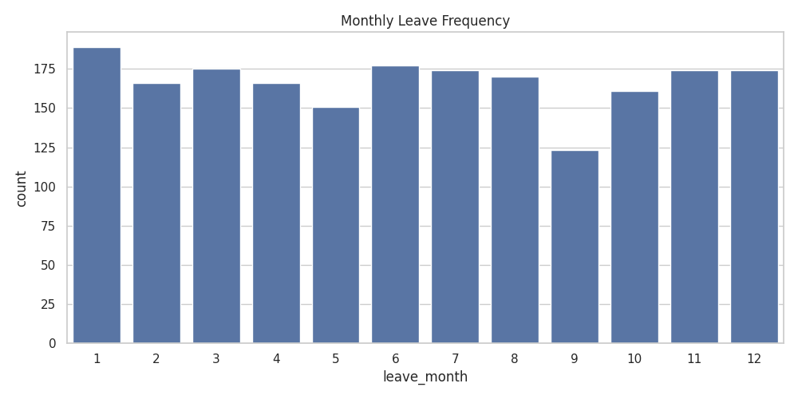
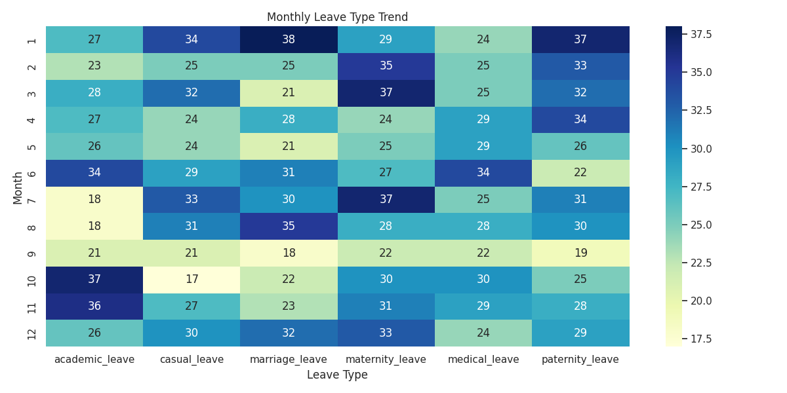
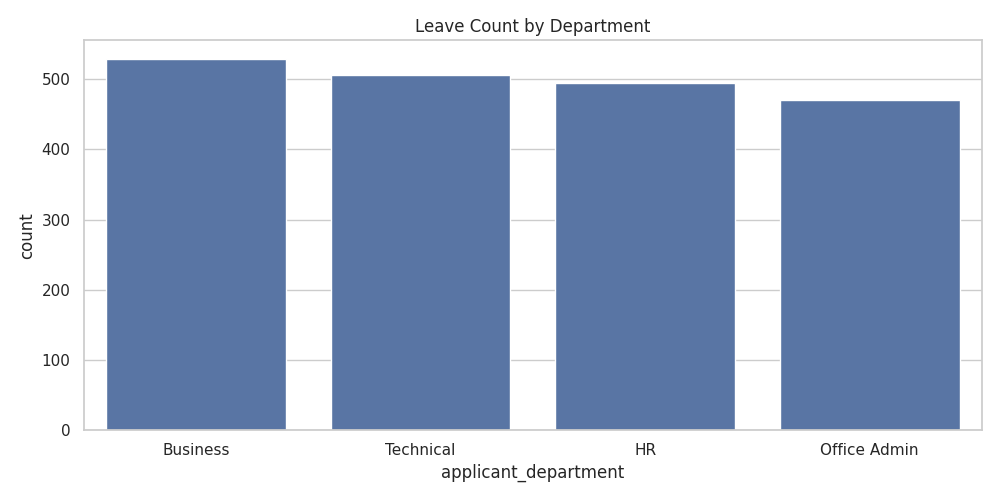
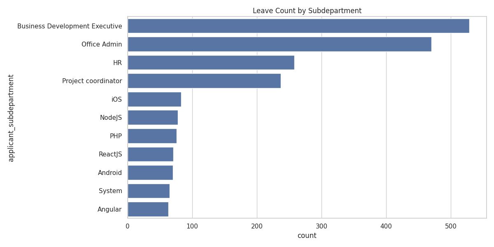
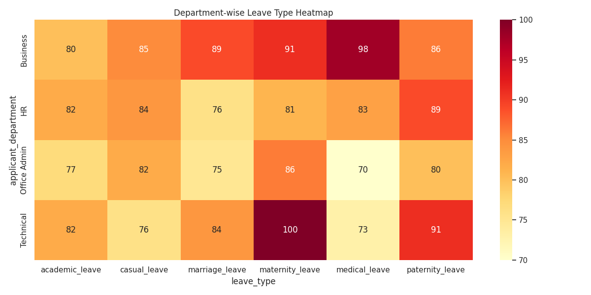
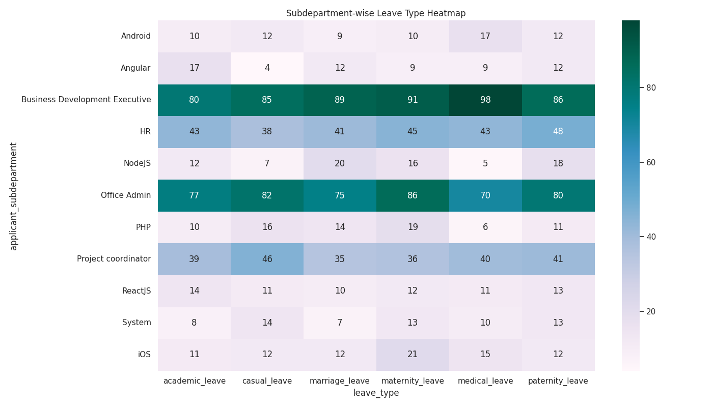
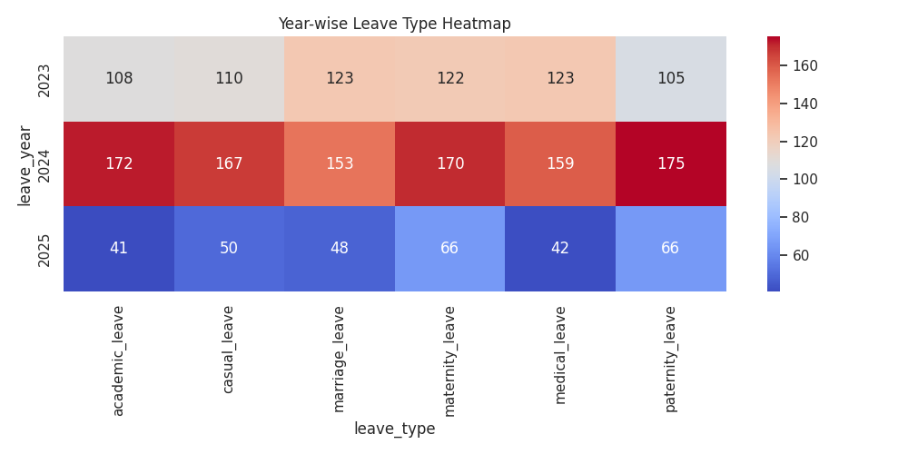

Leave Insights Dashboard
Distribution of Leave Types
Leave Duration Categories
Monthly Leave Frequency
Monthly Leave Type Trend
Top Leave Type by Month (CSV)
CSV file generated: charts/top_leave_type_by_month.csv
Leave Count by Department
Leave Count by Subdepartment
Department-wise Leave Type Heatmap
Subdepartment-wise Leave Type Heatmap
Year-wise Leave Type Heatmap
